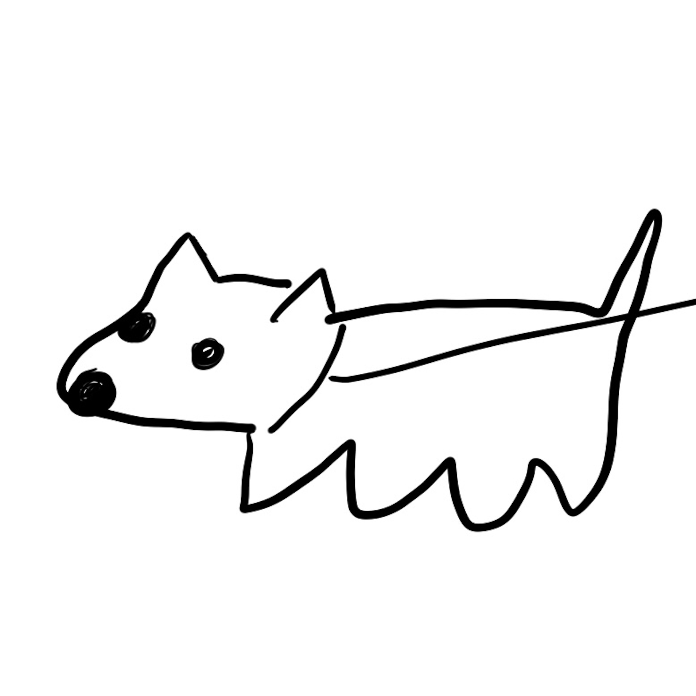
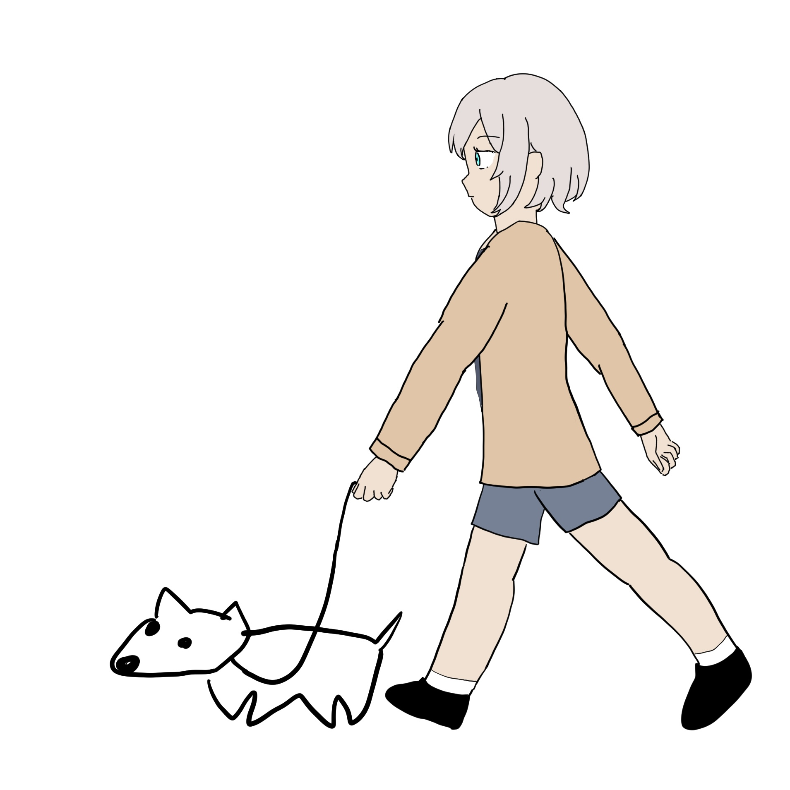
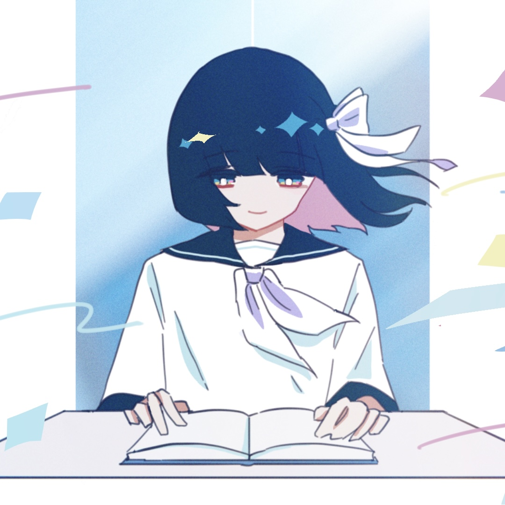
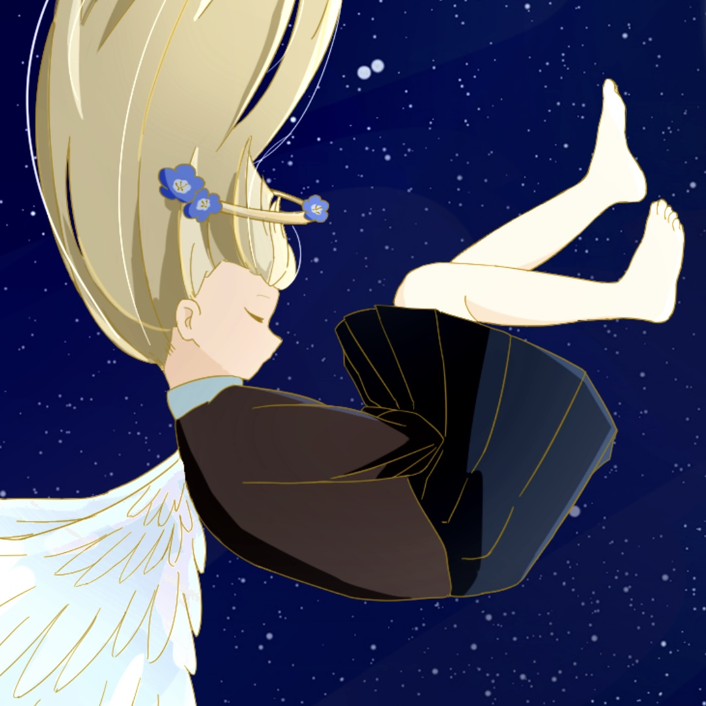

ベル
マイペースな男の子。散歩中に気になるものを見つけると進路を勝手に変えたり， 立ち止まって動かなくなったりする。犬種は不明だがテリア系っぽい。 テンションが上がると真顔のままで暴れる不思議な子。

illustration by 太郎の部屋
マイペースな男の子。散歩中に気になるものを見つけると進路を勝手に変えたり， 立ち止まって動かなくなったりする。犬種は不明だがテリア系っぽい。 テンションが上がると真顔のままで暴れる不思議な子。

illustration by 太郎の部屋
ベルの散歩をめんどくさそうにしているが，本心ではベルとの生活を楽しんでいる。

illustration by miluha
日々の考え事をノートに書き留めている。消えてしまった誰かのことを想い続ける。

illustration by ちょむてごん
天使の女の子。廃墟に家具を持ち込んで勝手に住んでいるが，多分犯罪。輪っかにネモフィラが咲いている。